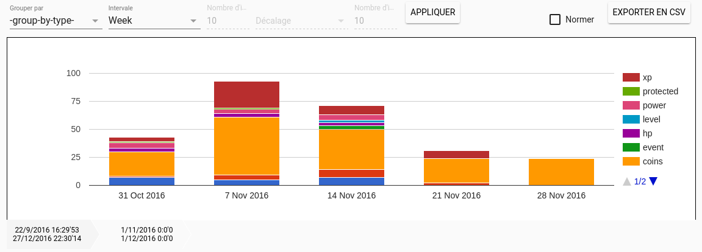

Les outils d'exploration de trace permettent de visualiser, sous différents angles, une trace présente sur un kTBS.
La page d'accueil de ces outils donne des informations générales sur une trace, comme la répartition des obsels par type, la durée de la trace, etc.
Capture d'écran de la page d'accueil des outils d'exploration de trace.
Histogramme
L'outil histogramme permet d'observer la répartition temporelle des obsels, groupés selon une valeur d'attribut ou un type d'obsel. Par exemple, sur une trace concernant la participation à une activité d'apprenants de différents groupes, on va pouvoir observer le nombres d'évenements tracé pour chaque groupe chaques jours/semaines/mois...
Pour utiliser l'outil histogramme, vous devez choisir un attribut/type d'obsel pour grouper les obsels (selecteur de gauche). Ensuite, avec le selecteur suivant, vous devez choisir l'interval temporel de l'histogramme (jour, semaine, etc). Une fois els intervals et gorupes choisi, il vous reste à choisir d'appliquer vos choix pour lancer une requête au kTBS.
Une fois l'histogramme chargé, vous pouvez visualiser le nombre d'obsels de chaque groupe en survolant les barres. En cliquant sur une barre de l'histogramme, ce dernier chargera un nouvel histogramme borné par l'interval sélectionné, et séparé par un interval de granulartié inférieur.
Le fil d'ariane sous l'histogramme permet de revenir rapidemment sur un interval déjà visité précédemment.

Capture d'écran de l'outil histogramme appliqué à une trace. L'interval choisi est la semaine, les obsels sont groupé par type d'obsel et le fil d'ariane montre que nous sommes en train de visualiser le mois de novembre 2016.
Une timeline est composée de deux parties. La partie haute affiche chaque obsel d'une trace à partir d'un temps de départ jusqu'à un temps d'arrivée. Les obsels sont empilés dans des colonnes qui corresopndent à des intervals divisant la durée totale représentée. La représentation des obsels dépend d'une feuille de style dont l'éditeur est présenté plus bas dans cette notice.
On peut explorer les obsels en les sélectionnant via la souris et en se déplaçant à l'aide des flèches directionnelles du clavier. Les informations concernant l'obsel sélectionné sont affiché via l'outil de visualisation d'obsels présenté plus bas.
Enfin, la partie haute de la timeline permet d'explorer la trace en zommant sur une partie désirée. Pour cela, il suffit de cliquer sur le point de départ de la région à zoomer, et de glisser sur la région à explorer en maintenant le bouton gauche de la souris appuyé.
La partie basse de la timeline, quant à elle, va permettre de naviguer temporellement dans la trace. En haut de cette partie, les graduations affichent la date de début d'un interval de la timeline (un colonne d'obsels). On peut naviguer avec cette graduation, en la faisant glisser vers la droite ou la gauche. Attention : la timeline garde en mémoire les obsels déjà téléchargés. Cependant, si vous utilisez les graduations pour naviguer vers une zone de la trace que vous n'avez pas encore téléchargé, les temps de chargement vont considérablement ralentir la visualisation. Il vaut mieux, dans ce cas, utiliser la partie présentée ci-dessous, pour charger une partie plus conséquente de la trace.
En bas de la partie basse de la timeline, on va trouver des intervals temporels qui va du début du primer obsel de la trace, à la fin du dernier obsel. Pour charger la trace sur certains de ces interval, il suffit de cliquer/déplacer sur les cases des intervals.
Capture d'écran de l'outil timeline appliqué à une trace. La trace commence en septembre 2016 et fini en decembre 2016. L'interval des case en base de la timeline est représenté en semaines. La partie en bleu clair représente la partie affichée sur la partie haute de la timeline.
Un éditeur de feuille de style va permettre d'importer, d'exporter, de modifier et de transformer en règle une feuille de style de timeline.
Une feuille de style de timeline est une feuille de style appliquée à une timeline.
Elle va permettre de déterminer quel symbole afficher pour des obsels qui respectent certaines règles.
Une règle de feuille de style est une disjonction de conjonction de règles atomiques. On va pouvoir écrire par exemple la règle suivante :
Un obsel de type A ayant un attribut a de valeur -10 OU un obsel ayant un attribut b de valeur supérieur à 5.
Une règle de feuille de style se présente comme affiché sur la figure suivante.
Capture d'écran d'une règle de feuille de style.
Les obsels de type ap et ayant un attribut ap_gain égal à -10 seront représentés par un rond bleu.
Les obsels de type buyPower seront représentés par un rond jaune.
De gauche à droite, sur la figure précédente, les options d'édition des règle de feuille de style :
Visibilité : Affiche ou cache un obsel qui respecte la règle. Cette option peut permettre d'ignorer volontairement certains obsels
Copier : Envoie à l'éditeur de règle de feuille de style (voir plus bas) une copie de la règle
Éditer : Envoie à l'éditeur de règle de feuille de style la règle sélectionnée.
Attention: Changer l'identifiant de la règle en créera une nouvelle.
Supprimer : Supprimer la règle de la feuille de style
L'éditeur de feuille de style possède aussi plusieurs options à appliquer à l'ensemble de la feuille de style, présenté sur la figure suivante.
Capture d'écran des options de l'éditeur de feuille de style.
De gauche à droite, sur la figure précédente, les options d'édition d'une feuille de style :
Créer : À DÉVELOPPER
Télécharger : Télécharge les feuilles de style enregistrées dans le modèle de la trace. Propose d'en choisir une.
Téléverser : Propose de sauvegarder la feuille de style actuelle dans le modèle de la trace.
Attention: Un choisissant un identifiant de feuille de style existant, vous remplacerez la feuille de style du même nom déjà présente.
Créer une méthode : Créer une méthode de transformation correspondant à la feuille de style. Voir lien
Supprimer : À DÉVELOPPER
Un éditeur de règle de feuille de style est un outil permettant de définir les règles de la feuille de style en cours d'utilisation.
La figure suivante est une capture d'écran de cet outil.
Capture d'un éditeur de règle de feuille de style.